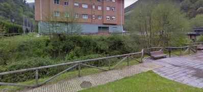

HITOS DE LA RUTA
Urb. La Llera
Descripcion urbanizacion asturiana Distancia hito anterior: 0.0kms La LLeraAsturias
Alde Porcio
Descripcion iglesia muy guapa Distancia hito anterior: 20.0kms PorcioAsturias

Alto de L'Angliru
Descripcion descripcion Distancia hito anterior: 78.0kms AngliruLeon